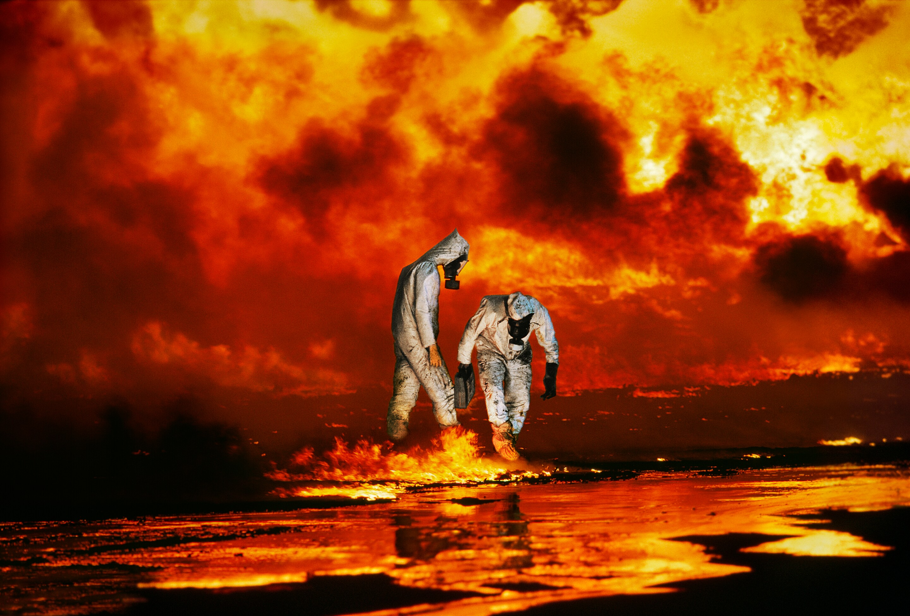

The great photographers
Steve McCurry
Steve McCurry was born in the 50s in Philadelphia. He studied
film at Pennsylvania state
university.
He has been one of the most iconic voices in contemporary photography for over three
decades,
documenting
conflicts, vanishing cultures, ancient traditions and contemporary culture.
His career was launched when he crossed the Pakistani border, disguised as a Pashtun,
just
before
the Soviet
invasion (late 70s). The photos he brings back are published all over the world and earn
him
the
Robert Capa
Gold Medal.
This is some of his work:
The Afghan Girl
In the 1980s, while photographing at a refugee camp in Afghanistan, McCurry took his most known picture– “Afghan Girl” – an emotional portrait of a young girl with piercing green eyes (finally identified in 2002 as Sharbat Gula).
Intha Fisherman on Inle Lake
The description of the photograph: “An Intha fisherman paddles his boat on Inle Lake in Burma/Myanmar. The Intha fishermen of Inle Lake, a highland fresh water lake, are famous for the way they paddle their boats using their legs. Some Intha people live at the edge of the lake, but others grow vegetables in floating gardens, and live in houses on stilts.”
Oil Wells Burn, al-Ahmadi Oil Fields, Kuwait, 1991
Environmentalists Rick Thorpe and Michael Bailey of Earthtrust examine the oil encrusted soil of an infernal landscape, in the Ahmadi Oil Fields, Kuwait. As his army retreated from Kuwait, at the end of the First Gulf War, Saddam Hussein ordered the ignition of the oil fields that scattered the country. The effect was an ecological disaster of unimaginable scale.
Jimmy Nelson
Jimmy Nelson was born in the 60s in England. In 1985, at age 17,
he left his boarding school
and
started
to trek the length of Tibet on foot. He took a small camera on his trip and photographed
his
journey,
which lasted two years. When he returned home, the collection of pictures he had taken
in
the
inaccessible country were published by the English National Geographic, and it was well
received.
He is very known for photographing indigenous communities, in a TED talk he described
the
working
process used in this project and stated it occasionally took months trying to find these
indigenous
peoples and then again weeks to gain their trust and permission to photograph them.
Jimmy Nelson's dream is to create awareness about the world's cultural diversity through
his
photography.
This is some of his work:
The Nenet
The Nenet are reindeer herders, migrating across the Yamal peninsula for more than a millennium already, facing temperatures ranging from -50°C in winter to 35°C in summer. Their annual migration of over a 1000 km includes a 48 km crossing of the frozen waters of the Ob River.
Korafe community
The Korafe community lives close to the town of Tufi in the north-east of Papua New Guinea’s main island. Tufi is close to Cape Nelson, a coastal area consisting of tropical ‘fjords’. Korafes are known for their impressive facial tattoos and feathered headdresses, and at ceremonies and special events, they wear tapa cloths, shell jewellery and feathers.
Nomadic Wodaabe
The nomadic Wodaabe community belong to the Fulani ethnic group, who are distributed across at least ten North-African countries. Chad is home to many of the Wodaabe. Far from the coast and land-locked, it nestles next to the great Saharan Desert. More than a hundred languages are spoken in this country of an estimated 14.5 million people. Marquensans people. Hakahau, Ua Pou, Marquesas Islands French Polynesia
Click here to go back to the home page.